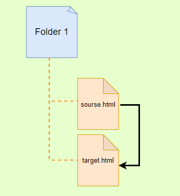
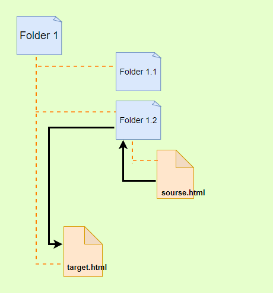
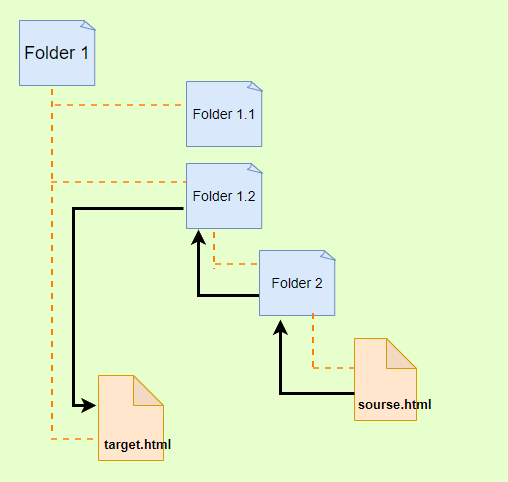
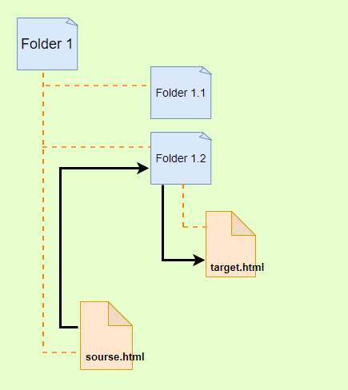
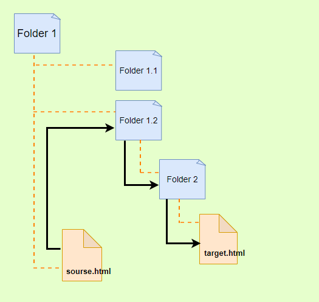
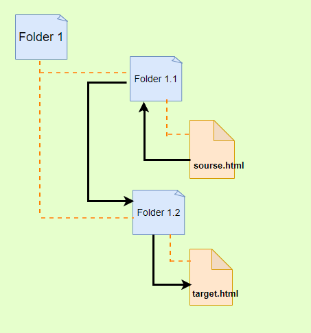
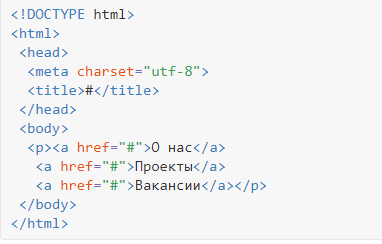

Создание ссылок
Для создания ссылки необходимо сообщить браузеру, что является ссылкой, а также указать адрес документа, на который следует сделать ссылку. Оба действия выполняются с помощью элемента <a>.
Элемент <a> (от англ. anchor — якорь) является строчным элементом
Синтаксис
<a href="адрес"> текст ссылки </a>
Закрывающий тег
Обязателен.
Содержимое элемента
текст ссылки
Текст, расположенный между тегами <a> и </a>, является, собственно, самой ссылкой, отображаемой на странице.
Отображение ссылок
Любая ссылка на веб-странице может находиться в одном из следующих состояний.
Обычная ссылка Такое состояние характеризуется для ссылок, которые ещё не открывали. По умолчанию обычные текстовые ссылки изображаются синим цветом и с подчёркиванием.
Посещённая ссылка Как только пользователь открывает документ, на который ведёт ссылка, она помечается как посещённая и меняет свой цвет на фиолетовый, установленный по умолчанию.
Активная ссылка Ссылка помечается как активная при щелчке по ней. Поскольку щелчок происходит достаточно быстро, подобное состояние ссылки весьма кратковременно. Цвет такой ссылки по умолчанию красный.
Атрибуты
- href
- target
- download
Атрибут href
Атрибут href (от англ. hypertext reference — гипертекстовая ссылка) задаёт "адрес" документа, на который следует перейти при клике на ссылку. Является обязательным.
<a href="адрес">
Значения атрибута href
"адрес"
Есть три вида алреса ссылок, которые можно задать для перехода на другой HTML-документ:
- Абсолютные адреса - для перехода на другой сайт.
- Относительные адреса - для навигации в пределах одного сайта;
- Якоря - для навигации в пределах одной страницы;
Кроме ссылок на документы по протоколу HTTP или HTTPS, с помощью значения атрибута href также можно создавать ссылки на:
Абсолютные адреса
Абсолютный путь указывает точное местоположение файла в пределах всей структуры папок на компьютере (сервере). Абсолютный путь к файлу даёт доступ к файлу со сторонних ресурсов и используется для перехода со своего сайта на другой сайт.
В качестве значения атрибута href указывается URL документа https://www.ratatype.ua/courses/english-qwerty/
<a href="https://www.ratatype.ua/courses/english-qwerty/"> Курсы "слепой" печати </a>
Этот URL содержит четыре части:
- протокол - https:// (опционально);
- домен - www.ratatype.ua/ (доменное имя или IP-адрес компьютера)
- папка - courses/ (имя папки, указывающей путь к файлу)
- файл - english-qwerty/ (имя файла)
Существует два вида записи абсолютного пути:
- с указанием протокола (полный)
- http://site.ru/pages/tips/tips1.html
- без указания протокола
- //site.ru/pages/tips/tips1.html
Когда Вы ссылаетесь на страницу на другом сайте, то можете использовать только полный абсолютный путь. Обычно Вы его просто копируете в браузере и вставляете в свой код.
- Если файл находится в корневой папке, то путь к файлу будет следующим:
- http://site.ru/index.html
- При отсутствии имени файла будет загружаться веб-страница, которая задана по умолчанию в настройках веб-сервера (так называемый индексный файл).
- http://site.ru/
Обычно в качестве индексного файла выступает документ с именем index.html. Наличие завершающего слеша / означает, что обращение идет к папке, если его нет — напрямую к файлу.
Относительные адреса
Относительные адреса используются для перехода на другую страницу в пределах одного сайта. Подобные ссылки, как следует из их названия, построены относительно текущего документа или корня сайта. При создании относительных ссылок надо понимать, какое значение для атрибута href следует указывать, поскольку оно зависит от исходного расположения файлов. Когда браузер не находит в ссылке протокол http://, он выполняет поиск указанного документа на том же сервере.
Относительный путь содержит следующие компоненты:
- папка (имя папки, указывающей путь к файлу)
- файл (имя файла)
Путь для относительных ссылок имеет три специальных обозначения:
- / (слеш) указывает на корневую директорию и говорит о том, что нужно начать путь от корневого каталога документов и идти вниз до следующей папки
- ./ (точка слеш) указывает на текущую папку
- ../ (две точки слеш) подняться на одну папку (директорию) выше
Рассмотрим несколько типичных вариантов.
1. Файлы располагаются в одной папке
Необходимо сделать ссылку из исходного документа source.html на target.html. В таком случае код будет следующий.
<a href="target.html"> Ссылка </a>
2. Файлы располагаются в разных папках
Когда исходный документ хранится в какой-либо папке, а ссылаемый в корне сайта, то перед именем документа в адресе ссылки следует поставить две точки и косую черту (/), как показано ниже.
<a href="../target.html"> Ссылка </a>
Две точки в данном случае означают выйти из текущей папки на уровень выше.
3. Файлы располагаются в разных папках
Теперь исходный файл находится в двух вложенных папках, и чтобы сослаться на документ в корне сайта, требуется повторить написание предыдущего примера два раза.
<a href="../../target.html"> Ссылка </a>
Аналогично обстоит дело с любым числом вложенных папок.
4. Файлы размещаются в разных папках
Теперь ситуация меняется, исходный файл располагается в корне сайта, а файл, на который необходимо сделать ссылку — в папке. В этом случае путь к файлу будет следующий.
<a href="folder1.2/target.html"> Ссылка </a>
Заметьте, что никаких дополнительных точек перед именем папки нет.
4.1. Если файл находится внутри не одной, а двух папок
В таком случае, путь к файлу записывается так:
<a href="folder1.2/folder2/target.html"> Ссылка </a>
5. Файлы размещаются в разных папках
Каждый файл располагается в своей папке и чтобы перейти из одной папки в другую ссылка будет следующей.
<a href="../folder1.2/target.html"> Ссылка </a>
Якоря
Якоря, или внутренние ссылки, создают переходы на различные разделы текущей веб-страницы, позволяя быстро перемещаться между разделами. Это оказывается очень удобным в случае, когда на странице слишком много текста.
Для создания якоря следует вначале сделать закладку в соответствующем месте и дать ей уникальное имя при помощи атрибута id. Это имя не должно больше повторяться нигде на странице, потому оно и уникальное. В имени допустимо писать русские, латинские буквы и символы, нельзя только пробел. В качестве значения href для перехода к этому якорю указывается решетка (#) и после него точно такое же значение, которое было присвоено id (без пробела).
Например, для самого верхнего параграфа страницы мы создали якорь с уникальным именем
<p id="top"> </p>
Тогда для быстрого перехода к верху страницы из какого-либо раздела этой же страницы, мы помещаем в этом разделе ссылку
<a href="#top"> Наверх </a>
При щелчке по такой ссылке произойдёт переход к элементу в окне браузера.
С якорями связана одна особенность работы браузера. После перехода к указанному якорю нажатие на кнопку «Назад» возвращает не на предыдущую просмотренную страницу, а к ссылке, с которой был сделан переход к якорю. Получается, что для перехода к предыдущему документу надо нажать кнопку «Назад» два раза.
Ссылку также можно сделать на якорь на другой веб-странице и даже на другом сайте. Для этого в атрибуте href элемента a надо указать полный адрес документа и в конце добавить символ решётки и имя якоря
<p><a href="https://ru.wikipedia.org/wiki/HTML5#Разметка"> Разметка HTML 5 </a></p>
В данном примере показано создание ссылки на страницу Википедии, при открытии ссылки происходит переход к разделу с якорем на странице HTML_5 id="Разметка"
Если на веб-странице содержится ссылка на якорь, а самого якоря нет, то никакой ошибки не возникнет. По этой причине решётку часто используют для пустых ссылок, когда ссылка нужна, но адрес пока не известен.
Такого рода ссылки по своему виду ничем не отличаются от обычных ссылок — по ним можно щёлкать и они становятся при этом посещаемыми. Естественно, перехода на другую страницу при этом нет, но происходит переход к верхней части страницы, что особенно заметно при длинном тексте.
Ссылка на адрес электронной почты
Иногда мы хотим создать гиперссылку на наш адрес электронной почты.
Для создания такой ссылки, значение атрибута href должно начинаться с mailto, затем через двоеточие следует адрес электронной почты, на который должно быть отправлено сообщение. Чтобы создать ссылку на адрес shay@awesome.com, к примеру, значением href будет "mailto:shay@awesome.com".
<a href="mailto:shay@awesome.com"> Задавайте вопросы по электронной почте</a>
Подобная ссылка по своему виду ничем не отличается от ссылки на веб-страницу, но при щелчке по ней у пользователя запускается почтовая программа, установленная по умолчанию. Поэтому в названии ссылки желательно указывать, что она имеет отношение к электронной почте, чтобы читатели понимали, к чему приведёт щелчок по ней: "Задавайте вопросы по электронной почте"
Можно также автоматически добавить тему сообщения, присоединив к адресу электронной почты через символ вопроса (?) параметр subject с темой сообщения (одно слово).
<a href="mailto:shay@awesome.com?subject=Вопрос"> Задавайте вопросы по электронной почте</a>
При запуске почтовой программы в поле " Тема " будет автоматически подставлено наше слово: Вопрос
Несколько слов в строке темы требуют кодирование пробелов с помощью %20.
<a href="mailto:shay@awesome.com?subject=Вопрос%20по%20HTML"> Задавайте вопросы по электронной почте</a>
В поле " Тема " будет автоматически подставлено: Вопрос по HTML
Добавление текста работает аналогичным образом, как и добавление темы, на этот раз с помощью параметра body= в значении href. Поскольку мы связываем один параметр с другим, нам нужно использовать амперсанд (&) для их разделения. Как и с темой, пробелы должны быть кодированы через %20, а перенос строк с помощью %0A.
Всё вместе, ссылка на shay@awesome.com с темой "Вопрос по HTML" и текстом "Когда начнется обучение?" потребует следующей записи:
<a href="mailto:shay@awesome.com?subject=Вопрос%20по%20HTML&body=Когда%20начнется%20обучение?"> Задавайте вопросы по электронной почте</a>
Ссылка на Skype
Ссылки на скайп позволяют:
- Позвонить
- <a href="skype:имя-пользователя?call">Мой Skype</a>
- Открыть чат
- <a href="skype:имя-пользователя?chat">Мой Skype</a>
- Добавить в список контактов
- <a href="skype:имя-пользователя?add">Мой Skype</a>
- Отправить файл
- <a href="skype:имя-пользователя?sendfile">Мой Skype</a>
Ссылка на телефон
На мобильных устройствах вы можете использовать протокол tel, который позволяет использовать ссылку для набора номера и вызова абонента. Номер следует указывать в международном формате, допустимо вставлять в номер дефис или писать его слитно
<a href="tel:+1555-2368">Звоните нам</a>
При щелчке по такой ссылке откроется приложение для телефона и начнётся вызов абонента.
Открытие ссылки в новом окне
Атрибут target
По умолчанию новый документ загружается в текущее окно браузера, однако это свойство можно изменить с помощью атрибута target. В качестве значения используется зарезервированное слово "_blank" - тогда страница откроется в новом окне браузера. Синтаксис следующий ( атрибут href указываем обязательно )
<a href="адрес"target="_blank">
Открывать в новой вкладке или новом окне — задавать через HTML мы не можем, это определяется настройками браузера и пользователя.
Загрузка файлов \ Скачивание файла
Атрибут download
Браузер самостоятельно определяет тип документа и открывает его, если может прочитать. Как правило, если ссылка ведёт на файл в понятном браузеру формате, то он будет открыт. html-документ, изображения в JPEG, PNG, обычные текстовые документы, видео и аудио-файлы — всё это современным браузерам знакомо и они вполне могут это показать.
Что касается zip-архивов и других форматов, которые браузеры пока не распознают, то при щелчке по ссылке браузер предложит пользователю скачать его на свой компьютер и сохранить файл на локальный диск.
В некоторых случаях требуется не открыть файл, как, например, рисунок, а сохранить его. Для этого просто добавьте атрибут download к элементу <a>. Атрибут download говорит браузеру незамедлительно скачать файл, а не использовать поведение по умолчанию для перехода к файлу. В качестве примера, если ссылка с атрибутом href указывает на изображение, браузер предложит пользователю скачать изображение, вместо того, чтобы открыть изображение в браузере.
Атрибут download может служить в качестве логического атрибута, загружая файл как есть, или он может содержать значение, которое станет именем файла после загрузки. Использование конкретного значения позволяет называть файл на вашем сервере как вы пожелаете, в то же время предоставляя пользователям значимое название.
Логический
<a href="image/xxx.jpg" download>Скачать файл</a>
Со значением<a href="image/xxx.jpg" download="Image">Скачать файл</a>
<a href="files/20022022.pdf" download="Отчет Февраль 2022.pdf">Загрузить отчет за Февраль 2022</a>
Изображение-ссылка
Мы можем сделать картинку ссылкой. При клике на такую картинку, будет происходить переход по адресу, указанному в ссылке. Чтобы сделать кликабельное изображение, необходимо поместить элемент <img> внутрь элемента <a>.
Синтаксис будет такой:
<a href="адрес ссылки"> <img src="адрес картинки"> </a>
Например, при записи <a href="https://www.w3.org/"> <img src="https://cdn.icon-icons.com/icons2/2699/PNG/512/wc_logo_icon_170233.png"> </a> у нас на странице появилась кликабельная картинка. При клике на эту картинку, мы переходим на главную страницу Консорциума Всемирной Паутины.